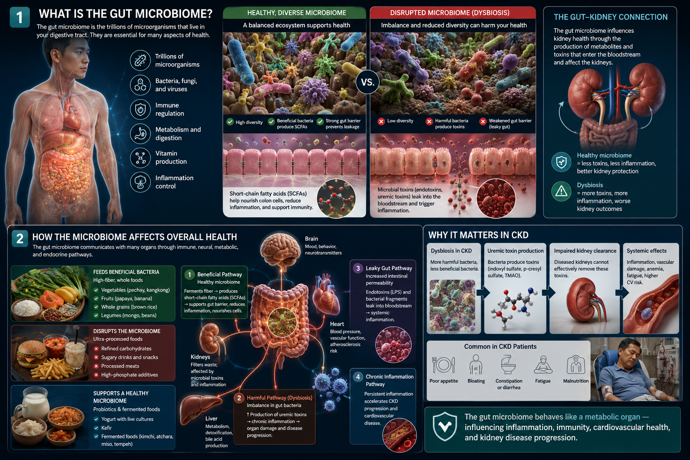
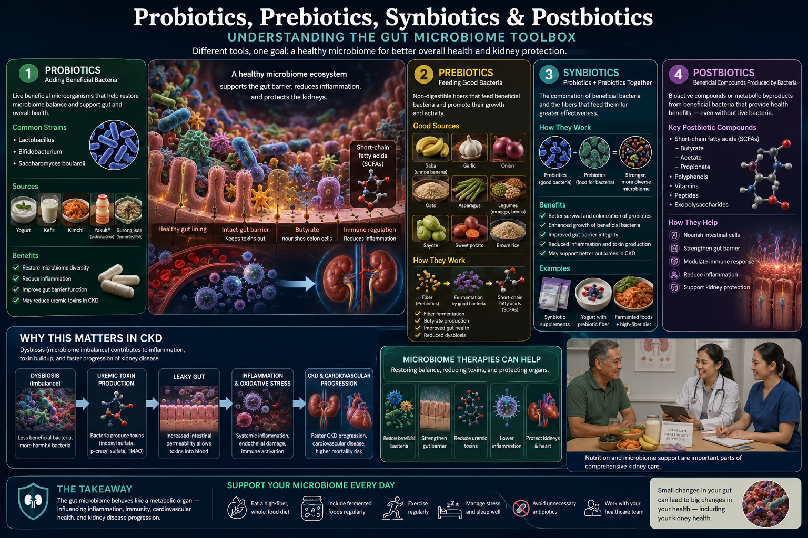
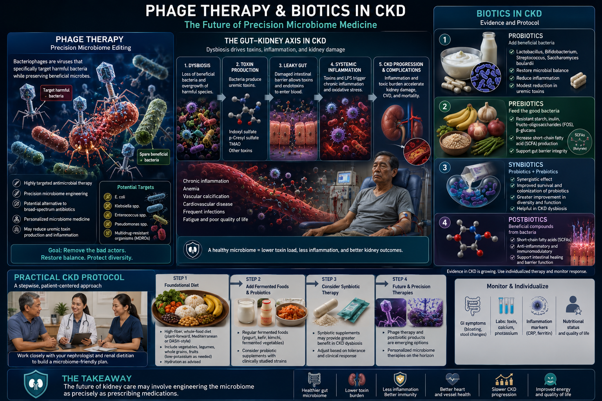

What Is the Microbiome?Ano ang Microbiome?Unsa ang Microbiome?
Your gut microbiome contains 38 trillion microorganisms — bacteria, viruses, fungi, and archaea — outnumbering your human cells nearly 1:1. Together they carry 150 times more genes than your human genome. They are not a passive ecosystem: they actively regulate digestion, immunity, inflammation, hormone production, neurotransmitter synthesis, and the metabolism of drugs and toxins.Ang microbiome ng inyong bituka ay naglalaman ng 38 trilyong mikroorganismo — mga bakterya, virus, fungi, at archaea — na halos kasing dami ng inyong mga human cells sa 1:1. Magkasama sila ay nagdadala ng 150 beses na mas maraming genes kaysa sa inyong human genome. Hindi sila isang passive na ecosystem: aktibo nilang kinokontrol ang digestyon, immunity, pamamaga, produksyon ng hormone, synthesis ng neurotransmitter, at metabolismo ng mga gamot at lason.Ang microbiome sa inyong tinai naglangkob og 38 trilyong mikroorganismo — mga bakterya, virus, fungi, ug archaea — halos kapareho sa inyong mga human cells sa 1:1. Magkauban nagdala sila og 150 beses nga mas daghang genes kaysa sa inyong human genome. Dili sila passive nga ecosystem: aktibo nila gikontrolar ang digestyon, immunity, pamamagang, produksyon sa hormone, synthesis sa neurotransmitter, ug metabolismo sa mga tambal ug hilo.

A healthy, diverse microbiome produces SCFAs, supports immunity, and protects kidney function. Dysbiosis increases uremic toxin production and systemic inflammation — making the microbiome a key target in CKD management.Ang isang malusog at diverse na microbiome ay gumagawa ng mga SCFA, sumusuporta sa immunity, at nagpoprotekta sa function ng bato. Ang dysbiosis ay nagpapataas ng produksyon ng uremic toxin at sistematikong pamamaga — na ginagawang pangunahing target ang microbiome sa pamamahala ng CKD.Ang himsog ug diverse nga microbiome nagprodyus sa mga SCFA, nagsuporta sa immunity, ug nagprotekta sa function sa kidney. Ang dysbiosis nagpadako sa produksyon sa uremic toxin ug sistematikong pamamagang — nga gihimo ang microbiome isip pangunahing target sa pagdumala sa CKD.
What your microbiome doesAno ang ginagawa ng inyong microbiomeUnsa ang gibuhat sa inyong microbiome
Digests dietary fiber into short-chain fatty acids (SCFAs) · Synthesizes vitamins B12, K2, and folate · Trains and regulates the immune system · Maintains gut wall integrity · Metabolizes medications and toxins · Produces neurotransmitters (serotonin, GABA, dopamine precursors).Nini-digest ang dietary fiber sa mga short-chain fatty acid (SCFA) · Nag-synthesize ng mga bitamina B12, K2, at folate · Nagsasanay at nagkokontrol ng immune system · Nagpapanatili ng integridad ng dingding ng bituka · Nagme-metabolize ng mga gamot at lason · Gumagawa ng mga neurotransmitter (serotonin, GABA, dopamine precursors).Nagdigest sa dietary fiber ngadto sa mga short-chain fatty acid (SCFA) · Nagsynthesis sa mga bitamina B12, K2, ug folate · Nagsanay ug nagkontrolar sa immune system · Nagpadayon sa integridad sa dingding sa tinai · Nagmetabolize sa mga tambal ug hilo · Nagprodyus sa mga neurotransmitter (serotonin, GABA, dopamine precursors).
What disrupts your microbiomeAno ang nakakaabala sa inyong microbiomeUnsa ang nagabalda sa inyong microbiome
Antibiotics (single course reduces diversity for up to 12 months) · Ultra-processed food diet · Chronic stress (cortisol shifts bacterial populations) · Proton pump inhibitors · NSAID overuse · Low dietary fiber · Recurrent infections · Aging itself reduces Bifidobacterium by 90%.Mga antibiotic (isang kurso ay nagpapababa ng diversity ng hanggang 12 buwan) · Diyetang puno ng ultra-processed na pagkain · Talamak na stress (ang cortisol ay nagbabago ng populasyon ng bakterya) · Proton pump inhibitors · Labis na paggamit ng NSAID · Mababang dietary fiber · Paulit-ulit na impeksyon · Ang pagtanda mismo ay nagpapababa ng Bifidobacterium ng 90%.Mga antibiotic (usa ka kurso nagkunhod sa diversity hangtod 12 buwan) · Diyeta nga puno sa ultra-processed nga pagkaon · Karon nga stress (ang cortisol nagbag-o sa populasyon sa bakterya) · Proton pump inhibitors · Sobra nga paggamit sa NSAID · Ubos nga dietary fiber · Balik-balik nga impeksyon · Ang pagtigulang mismo nagkunhod sa Bifidobacterium og 90%.
The dysbiosis stateAng estado ng dysbiosisAng estado sa dysbiosis
When the microbiome loses diversity or beneficial species are crowded out by harmful ones, it is called dysbiosis. Dysbiosis is associated with IBS, inflammatory bowel disease, obesity, type 2 diabetes, CKD progression, cardiovascular disease, depression, and autoimmune conditions.Kapag ang microbiome ay nawawalan ng diversity o ang mga kapaki-pakinabang na species ay naitataboy ng mga mapaminsalang species, ito ay tinatawag na dysbiosis. Ang dysbiosis ay nauugnay sa IBS, inflammatory bowel disease, obesity, type 2 diabetes, pag-unlad ng CKD, sakit sa cardiovascular, depresyon, at mga autoimmune na kondisyon.Kung ang microbiome nawad-an sa diversity o ang mga mapuslanon nga species gipulihan sa mga makadaot, gitawag kini nga dysbiosis. Ang dysbiosis may kalabutan sa IBS, inflammatory bowel disease, obesity, type 2 diabetes, pag-abante sa CKD, sakit sa cardiovascular, depresyon, ug mga autoimmune nga kondisyon.
How the Gut Microbiome Affects Every OrganPaano Naaapektuhan ng Gut Microbiome ang Bawat OrganGiunsa Pakaapekto sa Gut Microbiome ang Matag Organ
ProbioticsMga ProbioticMga Probiotic
Live microorganisms that confer a health benefit when consumed in adequate amountsMga buhay na mikroorganismo na nagbibigay ng benepisyo sa kalusugan kapag kinuha sa sapat na damiMga buhi nga mikroorganismo nga naghatag og benepisyo sa kahimsog kung kuhaon sa sapat nga dami
Probiotics are live bacteria (and some yeasts) that, when taken in sufficient quantities, temporarily colonize or transiently pass through the gut — competing with harmful bacteria, producing antimicrobial peptides, strengthening the gut wall, and modulating immune responses. They do not permanently alter the microbiome but exert measurable clinical effects during and briefly after consumption.Ang mga probiotic ay mga buhay na bakterya (at ilang yeast) na, kapag kinuha sa sapat na dami, pansamantalang nagko-colonize o dumadaan sa bituka — nakikipagkumpitensya sa mga mapaminsalang bakterya, gumagawa ng antimicrobial peptides, nagpapatibay ng dingding ng bituka, at nagmo-modulate ng mga immune response. Hindi nila permanenteng binabago ang microbiome ngunit nagpapakita ng nasusukat na klinikal na epekto sa panahon ng at kaagad pagkatapos ng pagkuha.Ang mga probiotic mao ang mga buhi nga bakterya (ug pipila ka yeast) nga, kung kuhaon sa sapat nga dami, temporaryong nagkolonisa o nagdaan sa tinai — nakigkumpetensya sa mga makadaot nga bakterya, nagprodyus sa antimicrobial peptides, nagpalig-on sa dingding sa tinai, ug nagmodulate sa mga immune response. Dili nila permanente gibag-o ang microbiome apan nagpakita og masukod nga klinikal nga epekto panahon sa ug human sa pagkuha.
Strongest evidence: Antibiotic-associated diarrhea prevention · Clostridioides difficile recurrence · IBS symptom reduction · rotavirus diarrhea in children · Helicobacter pylori eradication (adjunct) · reduction of uremic toxins in CKD (Lactobacillus/Bifidobacterium/Streptococcus combination).Pinakamalakas na ebidensya: Pag-iwas sa diarrhea na may kaugnayan sa antibiotic · Paulit-ulit na Clostridioides difficile · Pagbabawas ng sintomas ng IBS · Rotavirus diarrhea sa mga bata · Pagalis ng Helicobacter pylori (adjunct) · Pagbabawas ng uremic toxin sa CKD (kombinasyon ng Lactobacillus/Bifidobacterium/Streptococcus).Pinakakusog nga ebidensya: Paglikay sa diarrhea nga may kalabutan sa antibiotic · Balik-balik nga Clostridioides difficile · Pagkunhod sa sintomas sa IBS · Rotavirus diarrhea sa mga bata · Pagtanggal sa Helicobacter pylori (adjunct) · Pagkunhod sa uremic toxin sa CKD (kombinasyon sa Lactobacillus/Bifidobacterium/Streptococcus).

The four biotic categories work through complementary mechanisms — probiotics add beneficial organisms, prebiotics feed them, synbiotics combine both for synergistic effect, and postbiotics deliver bioactive compounds without live bacteria. All four have roles in CKD management.Ang apat na kategorya ng biotic ay gumagana sa pamamagitan ng mga komplementaryong mekanismo — ang mga probiotic ay nagdadagdag ng mga kapaki-pakinabang na organismo, ang mga prebiotic ay nagpapakain sa kanila, ang mga synbiotic ay pinagsasama ang dalawa para sa synergistic na epekto, at ang mga postbiotic ay naghahatid ng mga bioactive compound nang walang mga buhay na bakterya. Ang lahat ng apat ay may papel sa pamamahala ng CKD.Ang upat ka kategorya sa biotic nagtrabaho pinaagi sa mga komplementaryong mekanismo — ang mga probiotic nagdugang sa mga mapuslanon nga organismo, ang mga prebiotic nagpakain kanila, ang mga synbiotic nagkombina sa duha para sa synergistic nga epekto, ug ang mga postbiotic naghatod sa mga bioactive compound nga walay mga buhi nga bakterya. Ang tanan upat may papel sa pagdumala sa CKD.
PrebioticsMga PrebioticMga Prebiotic
Non-digestible food components that selectively stimulate the growth and activity of beneficial gut bacteriaMga hindi matutunaw na bahagi ng pagkain na selektibong nagpapasigla ng paglago at aktibidad ng mga kapaki-pakinabang na bakterya sa bitukaMga dili matunaw nga bahin sa pagkaon nga selektibo nga nagpadasig sa paglaki ug aktibidad sa mga mapuslanon nga bakterya sa tinai
Prebiotics are specific types of dietary fiber and other compounds that pass through the small intestine undigested and reach the colon intact, where they selectively feed beneficial bacteria — particularly Bifidobacterium and Lactobacillus species. Unlike probiotics, prebiotics modify your existing microbiome rather than adding foreign organisms.Ang mga prebiotic ay mga partikular na uri ng dietary fiber at iba pang kompuwesto na dumadaan sa maliit na bituka nang hindi natutunaw at umaabot sa colon nang buo, kung saan selektibo nilang pinakakain ang mga kapaki-pakinabang na bakterya — lalo na ang mga species ng Bifidobacterium at Lactobacillus. Hindi tulad ng mga probiotic, binabago ng mga prebiotic ang inyong kasalukuyang microbiome sa halip na magdagdag ng mga dayuhang organismo.Ang mga prebiotic mao ang espesipikong mga uri sa dietary fiber ug uban pang kompuwesto nga nagdaan sa gamay nga tinai nga wala natunaw ug moabot sa colon nga buo, diin selektibo nila gipakaon ang mga mapuslanon nga bakterya — ilabi na ang mga species sa Bifidobacterium ug Lactobacillus. Dili sama sa mga probiotic, ang mga prebiotic nagbag-o sa inyong kasamtangang microbiome imbes nga nagdugang sa mga langyaw nga organismo.
Strongest evidence: Increases Bifidobacterium populations · Improves stool frequency in constipation · Reduces triglycerides · Improves insulin sensitivity · Reduces hepatic fat in NAFLD · Reduces p-cresol and indoxyl sulfate production in CKD (inulin, psyllium, arabinoxylan).Pinakamalakas na ebidensya: Nagpapataas ng populasyon ng Bifidobacterium · Nagpapabuti ng dalas ng dumi sa constipation · Nagpapababa ng triglycerides · Nagpapabuti ng sensitivity sa insulin · Nagpapababa ng taba sa atay sa NAFLD · Nagpapababa ng produksyon ng p-cresol at indoxyl sulfate sa CKD (inulin, psyllium, arabinoxylan).Pinakakusog nga ebidensya: Nagpadako sa populasyon sa Bifidobacterium · Nagpaayo sa frequency sa dumi sa constipation · Nagkunhod sa triglycerides · Nagpaayo sa sensitivity sa insulin · Nagkunhod sa taba sa atay sa NAFLD · Nagkunhod sa produksyon sa p-cresol ug indoxyl sulfate sa CKD (inulin, psyllium, arabinoxylan).
How prebiotics generate butyratePaano gumagawa ng butyrate ang mga prebioticGiunsa paghimo sa mga prebiotic og butyrate
When Bifidobacterium and other butyrate-producing bacteria ferment prebiotic fiber, they produce short-chain fatty acids — primarily butyrate, propionate, and acetate. Butyrate is the primary fuel of colonocytes (colon lining cells), reduces gut wall permeability ("leaky gut"), has direct anti-inflammatory effects, and activates free fatty acid receptors that regulate appetite and insulin secretion.Kapag ang Bifidobacterium at iba pang mga bakteryang gumagawa ng butyrate ay nagfe-ferment ng prebiotic fiber, gumagawa sila ng mga short-chain fatty acid — pangunahin ang butyrate, propionate, at acetate. Ang butyrate ang pangunahing gasolina ng mga colonocyte (mga selula ng lining ng colon), nagpapababa ng permeability ng dingding ng bituka ("leaky gut"), may direktang anti-inflammatory na epekto, at nagpapagana ng mga free fatty acid receptor na nagkokontrol ng gana sa pagkain at insulin secretion.Kung ang Bifidobacterium ug uban pang mga bakterya nga nagprodyus sa butyrate nagferment sa prebiotic fiber, nagprodyus sila sa mga short-chain fatty acid — pangunahin ang butyrate, propionate, ug acetate. Ang butyrate mao ang pangunahing gasolina sa mga colonocyte (mga selula sa lining sa colon), nagkunhod sa permeability sa dingding sa tinai ("leaky gut"), may direktang anti-inflammatory nga epekto, ug nagpaaktibo sa mga free fatty acid receptor nga nagkontrolar sa gana sa pagkaon ug insulin secretion.
Prebiotic dosing and toleranceDosis at toleransya ng prebioticDosis ug toleransya sa prebiotic
Most people experience bloating and gas when starting prebiotics — especially inulin. This is a sign of fermentation (the intended effect) but can be uncomfortable. Start with 2–3 g daily and increase by 2 g every 1–2 weeks up to 8–12 g daily. Psyllium husk is better tolerated than inulin in CKD patients and has the added benefit of slowing gastric emptying — reducing postprandial glucose spikes.Karamihan sa mga tao ay nakakaranas ng bloating at gas kapag nagsisimula ng mga prebiotic — lalo na ang inulin. Ito ay tanda ng fermentation (ang layunin) ngunit maaaring makapaingit. Magsimula sa 2–3 g araw-araw at dagdagan ng 2 g bawat 1–2 linggo hanggang 8–12 g araw-araw. Ang psyllium husk ay mas mataas ang toleransya kaysa inulin sa mga pasyenteng CKD at may karagdagang benepisyo ng pagpapabagal ng gastric emptying — nagpapababa ng postprandial glucose spikes.Kadaghanan sa mga tawo nakasinati og bloating ug hangin kung magsugod sa mga prebiotic — ilabi na ang inulin. Kini usa ka tanda sa fermentation (ang tuyo) apan mahimong dili komportable. Sugdi sa 2–3 g adlaw-adlaw ug dugangan og 2 g matag 1–2 semana hangtod 8–12 g adlaw-adlaw. Ang psyllium husk mas taas ang toleransya kaysa inulin sa mga pasyente sa CKD ug may dugang nga benepisyo sa pagpapabagal sa gastric emptying — nagkunhod sa postprandial glucose spikes.
SynbioticsMga SynbioticMga Synbiotic
A combination of probiotics and prebiotics that synergistically benefit the hostIsang kombinasyon ng mga probiotic at prebiotic na synergistically nagbibigay ng benepisyo sa hostUsa ka kombinasyon sa mga probiotic ug prebiotic nga synergistically naghatag og benepisyo sa host
Synbiotics pair live beneficial bacteria with their preferred food substrate — ensuring the probiotic survives transit and thrives in the colon. The synergistic type is superior because the prebiotic is tailored to the specific probiotic strain: for example, Bifidobacterium longum paired with lactulose (which only B. longum ferments efficiently), or L. rhamnosus GG paired with inulin-type fructans.Ang mga synbiotic ay nagpapares ng mga buhay na kapaki-pakinabang na bakterya sa kanilang gustong food substrate — tinitiyak na ang probiotic ay nakaligtas sa paglalakbay at umuunlad sa colon. Ang synergistic na uri ay mas mainam dahil ang prebiotic ay iniaangkop sa partikular na probiotic strain: halimbawa, ang Bifidobacterium longum na ipinares sa lactulose (na epektibong nagfe-ferment lamang ang B. longum), o ang L. rhamnosus GG na ipinares sa inulin-type fructans.Ang mga synbiotic nagpares sa mga buhi nga mapuslanon nga bakterya ug ilang gusto nga food substrate — nagsiguro nga ang probiotic makabuhi sa transit ug molambo sa colon. Ang synergistic nga uri mas maayo tungod kay ang prebiotic giangkop sa espesipikong probiotic strain: pananglitan, ang Bifidobacterium longum nga giparisan sa lactulose (nga episyente lang giferment sa B. longum), o ang L. rhamnosus GG nga giparisan sa inulin-type fructans.
Clinical applications in CKD: Reduction of indoxyl sulfate and p-cresyl sulfate levels by 25–40% in pre-dialysis CKD patients. A 2019 RCT in CKD Stage 3–4 patients showed synbiotic supplementation (Bifidobacterium + inulin + FOS) reduced serum IS by 31% and improved constipation — a major source of uremic toxin recirculation.Mga klinikal na aplikasyon sa CKD: Pagbabawas ng mga antas ng indoxyl sulfate at p-cresyl sulfate ng 25–40% sa mga pasyenteng pre-dialysis CKD. Isang RCT noong 2019 sa mga pasyenteng CKD Stage 3–4 ay nagpakita na ang synbiotic supplementation (Bifidobacterium + inulin + FOS) ay nagbabawas ng serum IS ng 31% at nagpapabuti ng constipation — isang pangunahing pinagkukunan ng recirculation ng uremic toxin.Mga klinikal nga aplikasyon sa CKD: Pagkunhod sa mga antas sa indoxyl sulfate ug p-cresyl sulfate og 25–40% sa mga pasyente sa pre-dialysis CKD. Usa ka RCT niadtong 2019 sa mga pasyente sa CKD Stage 3–4 nagpakita nga ang synbiotic supplementation (Bifidobacterium + inulin + FOS) nagkunhod sa serum IS og 31% ug nagpaayo sa constipation — usa ka pangunahing tinubdan sa recirculation sa uremic toxin.
PostbioticsMga PostbioticMga Postbiotic
Preparations of inanimate microorganisms and/or their components that confer a health benefit on the hostMga paghahanda ng mga hindi buhay na mikroorganismo at/o kanilang mga bahagi na nagbibigay ng benepisyo sa kalusugan sa hostMga paghanda sa mga patay nga mikroorganismo ug/o ilang mga bahin nga naghatag og benepisyo sa kahimsog sa host
Postbiotics are the bioactive compounds produced by or derived from probiotic bacteria — including cell wall fragments, metabolites, enzymes, and short-chain fatty acids — that retain health benefits even after the bacteria are killed. Unlike probiotics, postbiotics are stable at room temperature, do not require refrigeration, are safe in immunocompromised patients, and have a longer shelf life.Ang mga postbiotic ay ang mga bioactive compound na ginawa ng o nagmula sa mga probiotic bacteria — kabilang ang mga fragment ng cell wall, metabolites, enzymes, at short-chain fatty acids — na nagpapanatili ng mga benepisyo sa kalusugan kahit na napatay na ang mga bakterya. Hindi tulad ng mga probiotic, ang mga postbiotic ay stable sa room temperature, hindi nangangailangan ng refrigeration, ligtas sa mga pasyenteng immunocompromised, at mas matagal ang shelf life.Ang mga postbiotic mao ang mga bioactive compound nga gihimo sa o nagagikan sa mga probiotic bacteria — lakip na ang mga fragment sa cell wall, metabolites, enzymes, ug short-chain fatty acids — nga nagpadayon sa mga benepisyo sa kahimsog bisan napatay na ang mga bakterya. Dili sama sa mga probiotic, ang mga postbiotic stable sa room temperature, dili kinahanglan ang refrigeration, luwas sa mga pasyente nga immunocompromised, ug mas dugay ang shelf life.
Key postbiotic compounds: Butyrate (gut wall integrity, anti-inflammatory) · Short-chain fatty acids (propionate, acetate) · Exopolysaccharides (immune modulation) · Bacteriocins (antimicrobial peptides) · Teichoic acid (immune signaling) · Heat-killed Lactobacillus (Tyndallized probiotics) · Lactoferrin · Indole derivatives (gut-brain axis).Mga pangunahing postbiotic compound: Butyrate (integridad ng dingding ng bituka, anti-inflammatory) · Short-chain fatty acids (propionate, acetate) · Exopolysaccharides (immune modulation) · Bacteriocins (antimicrobial peptides) · Teichoic acid (immune signaling) · Heat-killed Lactobacillus (Tyndallized probiotics) · Lactoferrin · Indole derivatives (gut-brain axis).Mga pangunahing postbiotic compound: Butyrate (integridad sa dingding sa tinai, anti-inflammatory) · Short-chain fatty acids (propionate, acetate) · Exopolysaccharides (immune modulation) · Bacteriocins (antimicrobial peptides) · Teichoic acid (immune signaling) · Heat-killed Lactobacillus (Tyndallized probiotics) · Lactoferrin · Indole derivatives (gut-brain axis).
Why postbiotics matter for CKD and immunocompromised patients: Live probiotics carry a small but real infection risk in patients with severe immunosuppression or gut mucosal damage. Postbiotics provide the beneficial signals of probiotic bacteria without live organisms — making them safer for transplant recipients and patients on immunosuppression.Bakit mahalaga ang mga postbiotic para sa CKD at immunocompromised na mga pasyente: Ang mga buhay na probiotic ay may maliit ngunit tunay na panganib ng impeksyon sa mga pasyenteng may matinding immunosuppression o pinsala sa gut mucosa. Ang mga postbiotic ay nagbibigay ng mga kapaki-pakinabang na signal ng probiotic bacteria nang walang mga buhay na organismo — na ginagawa silang mas ligtas para sa mga tatanggap ng transplant at mga pasyenteng nasa immunosuppression.Ngano importante ang mga postbiotic para sa CKD ug immunocompromised nga mga pasyente: Ang mga buhi nga probiotic may gamay apan tinuod nga peligro sa impeksyon sa mga pasyente nga may grabe nga immunosuppression o pinsala sa gut mucosa. Ang mga postbiotic naghatag sa mga mapuslanon nga signal sa probiotic bacteria nga walay mga buhi nga organismo — nga gihimo silang mas luwas para sa mga makadawat sa transplant ug mga pasyente nga naa sa immunosuppression.
Phage Therapy — Precision Microbiome EditingPhage Therapy — Precision na Pag-edit ng MicrobiomePhage Therapy — Precision nga Pag-edit sa Microbiome
Viruses that specifically infect and kill bacteria — the most targeted microbiome interventionMga virus na partikular na nag-iimpeksyon at pumapatay ng mga bakterya — ang pinaka-targeted na interbensyon sa microbiomeMga virus nga espesipiko nga nag-impeksyon ug nagpatay sa mga bakterya — ang pinaka-targeted nga interbensyon sa microbiome
Bacteriophages are viruses that infect only specific bacterial strains — leaving all other bacteria untouched. Unlike antibiotics, which cause collateral damage to the entire microbiome, phages can eliminate a single pathogenic species with extraordinary precision. Phage cocktails are now used in compassionate use programs for multi-drug resistant infections (including MDR Acinetobacter and Klebsiella in dialysis catheter infections) where no antibiotic remains effective.Ang mga bacteriophage ay mga virus na nag-iimpeksyon lamang ng mga partikular na bacterial strain — iniiwanan ang lahat ng iba pang bakterya na hindi nagagalaw. Hindi tulad ng mga antibiotic, na nagdudulot ng collateral damage sa buong microbiome, ang mga phage ay maaaring mag-eliminate ng isang pathogenic species nang may pambihirang katumpakan. Ang mga phage cocktail ay ginagamit na ngayon sa mga compassionate use program para sa mga multi-drug resistant na impeksyon (kabilang ang MDR Acinetobacter at Klebsiella sa mga impeksyon ng dialysis catheter) kung saan walang natitirang epektibong antibiotic.Ang mga bacteriophage mao ang mga virus nga nag-impeksyon lamang sa espesipikong mga bacterial strain — gibilin ang tanan pang uban nga bakterya nga wala magagalaw. Dili sama sa mga antibiotic, nga nagdala og collateral damage sa tibuok microbiome, ang mga phage makaeliminar sa usa ka pathogenic species nga adunay talagsaon nga katumpakan. Ang mga phage cocktail gigamit na karon sa mga compassionate use program para sa mga multi-drug resistant nga impeksyon (lakip ang MDR Acinetobacter ug Klebsiella sa mga impeksyon sa dialysis catheter) diin walay nabilin nga epektibong antibiotic.
For microbiome modulation, phage-based approaches are being developed to selectively reduce p-cresol-producing Clostridiales species in CKD — reducing uremic toxin production without disrupting beneficial flora. This is still primarily research but represents the future of precision microbiome medicine.Para sa microbiome modulation, ang mga phage-based na pamamaraan ay binubuo upang selektibong bawasan ang mga p-cresol-producing Clostridiales species sa CKD — nagpapababa ng produksyon ng uremic toxin nang hindi naaabala ang kapaki-pakinabang na flora. Ito ay pangunahing pananaliksik pa rin ngunit kumakatawan sa kinabukasan ng precision microbiome medicine.Para sa microbiome modulation, ang mga phage-based nga pamaagi gibuhatan aron selektibo nga makunhuran ang mga p-cresol-producing Clostridiales species sa CKD — nagkunhod sa produksyon sa uremic toxin nga wala nagabalda sa mapuslanon nga flora. Kini panguna nga pananaliksik pa gihapon apan nagrepresenta sa kaugmaon sa precision microbiome medicine.
Biotics in CKD — Evidence and ProtocolMga Biotic sa CKD — Ebidensya at ProtokolMga Biotic sa CKD — Ebidensya ug Protokol

Biotics work upstream of dialysis — reducing toxin production at the gut level rather than trying to remove albumin-bound toxins from the blood. Phage therapy represents the next frontier: precision elimination of specific toxin-producing bacterial species.Ang mga biotic ay gumagana sa itaas ng dialysis — nagpapababa ng produksyon ng toxin sa antas ng bituka sa halip na subukang alisin ang mga albumin-bound toxin mula sa dugo. Ang phage therapy ay kumakatawan sa susunod na hangganan: precision na pag-aalis ng mga partikular na species ng bakterya na gumagawa ng toxin.Ang mga biotic nagtrabaho sa itaas sa dialysis — nagkunhod sa produksyon sa toxin sa antas sa tinai imbes nga sulayon ang pagtanggal sa mga albumin-bound toxin gikan sa dugo. Ang phage therapy nagrepresenta sa sunod nga hangtoran: precision nga pag-alis sa mga espesipikong species sa bakterya nga nagprodyus sa toxin.
| BioticBioticBiotic | CKD benefitBenepisyo sa CKDBenepisyo sa CKD | Evidence levelAntas ng ebidensyaAntas sa ebidensya | Philippine availabilityAvailability sa PilipinasAvailability sa Pilipinas |
|---|---|---|---|
| Renadyl (L. acidophilus + B. longum + S. thermophilus)Renadyl (L. acidophilus + B. longum + S. thermophilus)Renadyl (L. acidophilus + B. longum + S. thermophilus) | ↓ Indoxyl sulfate 20–30% · ↓ BUN · ↓ constipation · ↓ p-cresol↓ Indoxyl sulfate 20–30% · ↓ BUN · ↓ constipation · ↓ p-cresol↓ Indoxyl sulfate 20–30% · ↓ BUN · ↓ constipation · ↓ p-cresol | Multiple RCTs in CKD Stage 3–5Maraming RCT sa CKD Stage 3–5Daghang RCT sa CKD Stage 3–5 | ✓ Goodfellow Pharma — prescription or direct✓ Goodfellow Pharma — reseta o direkta✓ Goodfellow Pharma — reseta o direkta |
| Psyllium husk (prebiotic)Psyllium husk (prebiotic)Psyllium husk (prebiotic) | ↓ Uremic toxin precursors · ↓ postprandial glucose · ↓ LDL↓ Uremic toxin precursors · ↓ postprandial glucose · ↓ LDL↓ Uremic toxin precursors · ↓ postprandial glucose · ↓ LDL | RCTs + meta-analyzesRCTs + meta-analyzesRCTs + meta-analyzes | ✓ All pharmacies — Metamucil or generic✓ Lahat ng botika — Metamucil o generic✓ Tanan nga botika — Metamucil o generic |
| Butyrate (postbiotic)Butyrate (postbiotic)Butyrate (postbiotic) | ↑ Gut wall integrity · ↓ systemic inflammation · ↓ LPS translocation↑ Integridad ng dingding ng bituka · ↓ sistematikong pamamaga · ↓ LPS translocation↑ Integridad sa dingding sa tinai · ↓ sistematikong pamamagang · ↓ LPS translocation | Promising — mostly animal + early human trialsPromising — pangunahing animal + maagang human trialsPromising — panguna animal + sayo nga human trials | ⚠ Limited — some health stores⚠ Limitado — ilang health stores⚠ Limitado — pipila ka health stores |
| Inulin/FOS (prebiotic)Inulin/FOS (prebiotic)Inulin/FOS (prebiotic) | ↓ p-cresol producing bacteria 40–60% · ↑ Bifidobacterium↓ mga bakteryang gumagawa ng p-cresol ng 40–60% · ↑ Bifidobacterium↓ mga bakterya nga nagprodyus sa p-cresol og 40–60% · ↑ Bifidobacterium | RCTs in CKD + IBDRCTs sa CKD + IBDRCTs sa CKD + IBD | ✓ Health food stores · some pharmacies✓ Health food stores · ilang botika✓ Health food stores · pipila ka botika |
| Saccharomyces boulardiiSaccharomyces boulardiiSaccharomyces boulardii | ↓ C. difficile recurrence · ↓ antibiotic-associated diarrhea↓ paulit-ulit na C. difficile · ↓ diarrhea na may kaugnayan sa antibiotic↓ balik-balik nga C. difficile · ↓ diarrhea nga may kalabutan sa antibiotic | Strong RCT evidenceMalakas na ebidensya ng RCTKusog nga ebidensya sa RCT | ✓ Florastor brand — available✓ Florastor brand — available✓ Florastor brand — available |
Practical Biotic Protocol by Health GoalPraktikal na Biotic Protocol ayon sa Layunin sa KalusuganPraktikal nga Biotic Protocol sumala sa Layunin sa Kahimsog
For CKD patients (pre-dialysis)Para sa mga pasyenteng CKD (pre-dialysis)Para sa mga pasyente sa CKD (pre-dialysis)
Step 1: Psyllium husk 5 g in water every morning — start with 2.5 g for 2 weeks to allow gut adaptation. Step 2: Renadyl 1 cap twice daily with meals (Goodfellow Pharma). Step 3: Increase dietary fiber to 25–35 g/day from low-potassium sources (oats, apple without skin, white rice, barley). Step 4: Reduce red meat — primary substrate for IS and pCS production. Re-check IS and pCS levels at 3 months if available.Hakbang 1: Psyllium husk 5 g sa tubig tuwing umaga — magsimula sa 2.5 g sa loob ng 2 linggo upang payagan ang gut adaptation. Hakbang 2: Renadyl 1 kapsula dalawang beses sa isang araw kasabay ng pagkain (Goodfellow Pharma). Hakbang 3: Dagdagan ang dietary fiber sa 25–35 g/araw mula sa mga low-potassium na pinagkukunan (oats, mansanas na walang balat, puting kanin, barley). Hakbang 4: Bawasan ang pulang karne — pangunahing substrate para sa produksyon ng IS at pCS. I-recheck ang mga antas ng IS at pCS sa 3 buwan kung available.Hakbang 1: Psyllium husk 5 g sa tubig matag buntag — sugdi sa 2.5 g sulod sa 2 semana aron payagan ang gut adaptation. Hakbang 2: Renadyl 1 kapsula duha ka beses sa usa ka adlaw uban sa pagkaon (Goodfellow Pharma). Hakbang 3: Dugangan ang dietary fiber sa 25–35 g/adlaw gikan sa mga low-potassium nga tinubdan (oats, mansanas nga walay panit, putong kanin, barley). Hakbang 4: Pagkunhori ang pulang karne — pangunahing substrate sa produksyon sa IS ug pCS. I-recheck ang mga antas sa IS ug pCS sa 3 buwan kung available.
For general gut healthPara sa pangkalahatang kalusugan ng bitukaPara sa pangkalahatang kahimsog sa tinai
Diet first: 30+ different plant foods per week (the single strongest predictor of microbiome diversity). Fermented foods: homemade buro, plain yogurt, vinegar-preserved vegetables, miso — natural probiotic sources. Prebiotic foods daily: garlic, onion, banana, oats, asparagus. Supplement if needed: Multi-strain probiotic 10–50 billion CFU daily. Timing: Probiotics with or just before meals — stomach acid is lowest during eating.Diyeta muna: 30+ iba't ibang pagkain mula sa halaman bawat linggo (ang pinaka-malakas na predictor ng diversity ng microbiome). Mga fermented na pagkain: homemade buro, plain yogurt, mga gulay na napreserba sa suka, miso — natural na mga pinagkukunan ng probiotic. Mga prebiotic na pagkain araw-araw: bawang, sibuyas, saging, oats, asparagus. Supplement kung kinakailangan: Multi-strain probiotic 10–50 bilyong CFU araw-araw. Timing: Mga probiotic kasabay ng o kaagad bago kumain — pinakamababa ang acid ng tiyan habang kumakain.Diyeta una: 30+ lain-laing pagkaon gikan sa mga halaman matag semana (ang pinaka-kusog nga predictor sa diversity sa microbiome). Mga fermented nga pagkaon: homemade buro, plain yogurt, mga utanon nga napreserba sa suka, miso — natural nga mga tinubdan sa probiotic. Mga prebiotic nga pagkaon adlaw-adlaw: bawang, sibuyas, saging, oats, asparagus. Supplement kung kinahanglan: Multi-strain probiotic 10–50 bilyong CFU adlaw-adlaw. Timing: Mga probiotic uban sa o kaagad sa wala pa mokaon — pinakaubos ang acid sa tiyan panahon sa pagkaon.
When to be cautious with probioticsKung kailan mag-iingat sa mga probioticKung kanus-a mag-amping sa mga probiotic
- Immunocompromised patients (organ transplant, chemotherapy, high-dose steroids) — use postbiotics (heat-killed preparations) instead of live probioticsMga pasyenteng immunocompromised (organ transplant, chemotherapy, high-dose steroids) — gumamit ng mga postbiotic (heat-killed preparations) sa halip na mga buhay na probioticMga pasyente nga immunocompromised (organ transplant, chemotherapy, high-dose steroids) — gamiton ang mga postbiotic (heat-killed preparations) imbes sa mga buhi nga probiotic
- Short bowel syndrome — abnormal flora translocation riskShort bowel syndrome — panganib ng abnormal flora translocationShort bowel syndrome — peligro sa abnormal flora translocation
- Central venous catheters — rare but documented cases of Lactobacillus bacteremia in catheterized ICU patientsCentral venous catheters — bihirang ngunit dokumentadong mga kaso ng Lactobacillus bacteremia sa mga pasyenteng may catheter sa ICUCentral venous catheters — bihirang apan dokumentado nga mga kaso sa Lactobacillus bacteremia sa mga pasyente nga adunay catheter sa ICU
- Dialysis patients with catheters — discuss with your nephrologist before startingMga pasyenteng nagdi-dialysis na may catheter — talakayin sa inyong nephrologist bago magsimulaMga pasyente sa dialysis nga adunay catheter — hisgutan sa inyong nephrologist bago magsugod
- Always inform your physician of all supplements — including "natural" probioticsLaging ipaalam sa inyong manggagamot ang lahat ng mga supplement — kasama ang "natural" na mga probioticKanunay ipahibalo sa inyong doktor ang tanan nga mga supplement — lakip ang "natural" nga mga probiotic
W. G. M. Rivero, MD, FPCP, DPSN
Specialist in Internal Medicine, Nephrology, and Clinical Nutrition.Espesyalista sa Panloob na Medisina, Nefrolohiya, at Klinikal na Nutrisyon.Espesyalista sa Internal nga Medisina, Nefrolohiya, ug Klinikal nga Nutrisyon. Integrative and evidence-based approach to gut-kidney axis medicine.
PRC 0105184 · seriousmd.com/doc/williamrivero ·